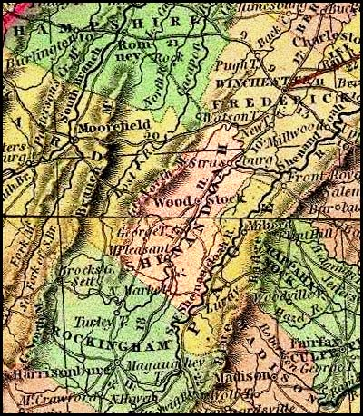
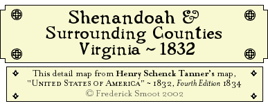

|
Table of Contents
 Richard C. Walter to Henry Smoot
Richard C. Walter to Henry SmootA Deed of Trust ~ 1820
James H. Smoot to Charles U. Lovell and Joel PennybackerA Bill of Sale ~ 1823
Middleton Smoot ~ Hannah R. W. Northcraft A Marriage Bond ~ 1826 |

Page © Copyright 2002 Fred Smoot
All Rights Reserved